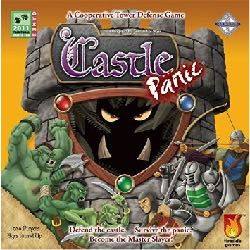

| Page 1 |
Coaching: Cooperation T
By Carrie Koepke
The Final Elements
(Missouri, USA)
The Final Elements
favorite FLL skill
developing games
include:
Castle Panic
Jupiter Rescue
Siege Towers (App)


Coach’s Corner

hrough Gaming
FLL teams are like any other team. To truly function, they must have a strong bond and a common
goal. The Final Elements have a passion for tinkering, programing and engineering, but gaming has
allowed them to develop a friendship and support system that highlights both their individual
strengths and their teamwork. Most of all . . . it is fun
The Final Elements are fortunate to have a fantastic meeting and work space. Valhalla’s Gate is a
gaming store in Columbia,
Missouri. Working there allows

our team to develop in an
unconventional way.
When The Final Elements formed
in 2015, we still had a few months
prior to release day. While my son
had watched his sister the
previous year, with The Fantastic
LEGO Ladies, none of the other
team members quite knew what
FLL entailed. We decided to first
focus on team bonding and
cooperation. It is critical for the
team to work well together toward a common goal, and beside the meeting table stood a shelf filled
with open games for guests of the store to play. Our other coach, co-owner of the store, quickly
guided the boys to choose from a selection of cooperative games.
These games have become an integral part of our team development. Cooperative gaming forces
them to work together to reach for a common goal. They focus not only on their own game play, but
also how their game play will best fit with their teammates. Sometimes this requires sacrificing a
play to allow another to do something more strategic. Clear and concise communication is also
needed for everyone to reach a consensus on game play approach.
The boys have utilized the games to solidify their identity. When we began discussing the Core
Values in their first season, the team quickly utilized the games to understand the Core Values more

deeply. They talked about how Coach Thad had to read through the rules with them – so they could
learn together how to play. They talked about being a team and having fun. They also discussed how
often they did not win, but that the experience was still valuable because of what they discovered.
They are still developing Gracious Professionalism® and Coopertition® during gameplay, and
identify it as important as they make solid strides toward this difficult goal each time they meet.
In addition to the boxed games, we have also discovered that computerized gameplay allows for
needed relief and bonding at the end of meetings. Gathering around a round of Siege Towers allows
the boys to fiddle with construction and physics concepts in a light atmosphere. As they compete to
build the surviving highest towers on wheeled base platforms, they build skills which help them later
consider the structural integrity of their robot.
While gaming is most often a part of off season or celebratory meetings, we also find it useful to

infuse games into random meetings. It helps the team remember to have fun and to work together.